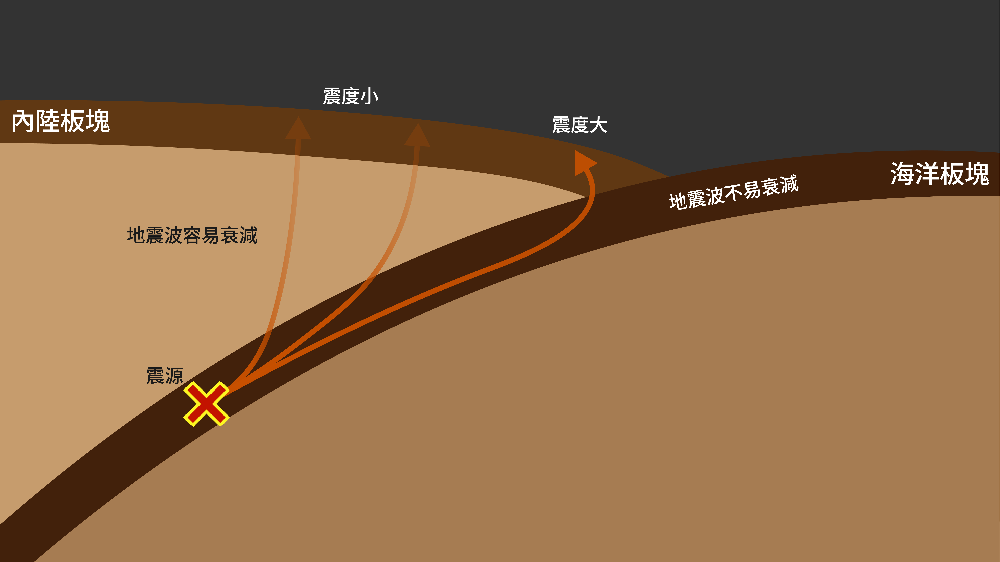
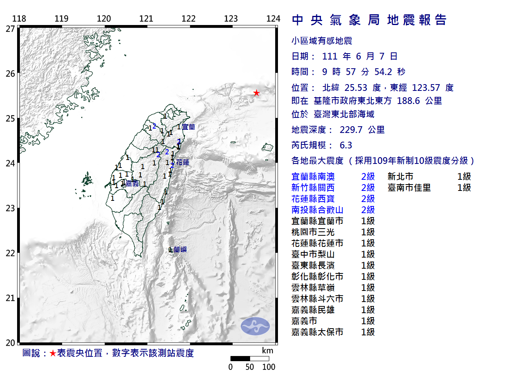
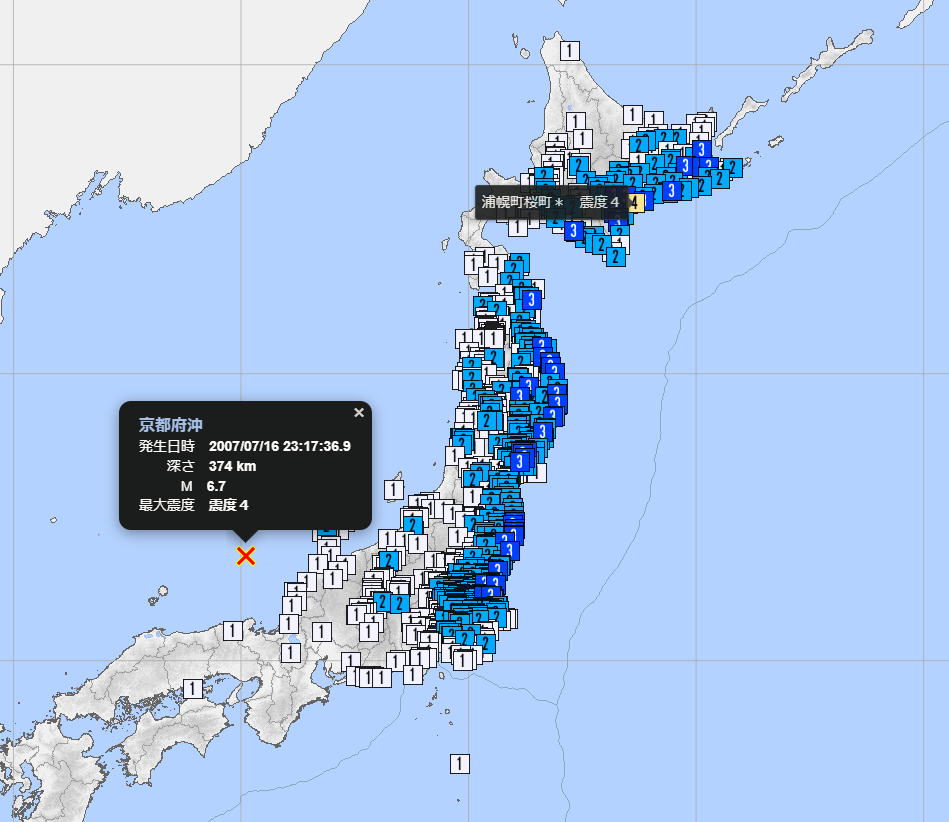

距離震央近，震度越大？
一般地震發生時，基本上震度會呈現同心圓狀分布，隨著距離震央越遠逐漸遞減，但在震源深度較深時，會出現離震央遠，震度反而比離震央近還大的現象，此現象稱為「異常震域」。
原因
地震波在通過堅硬介質時較不易衰減，因此在震源深度很深時，垂直往上傳播的地震波會經過軟流圈，震波衰減快，而沿著板塊傳播的地震波則因為板塊較堅硬，震波到達地表時衰減程度小，可以傳播比較遠，造成距離震央較遠的地區反而震度比較大。

深層地震的震波傳遞示意圖
實際事例
2022 年東北外海地震 規模 6.3 深度 229.7 公里
震源在石垣島北方的菲律賓海板塊內部，震波沿板塊內部傳播，距離板塊交界處最近的花蓮等地觀測到震度 2。

2022 年東北外海地震
2007 年京都外海地震 規模 6.7 深度 374 公里
震源在京都外海的太平洋板塊內部，震波沿著太平洋板塊傳播到地表，最大震度 4 出現在距離震央 1000 公里外的北海道，太平洋側大範圍觀測到震度 3。

2007 年京都外海地震